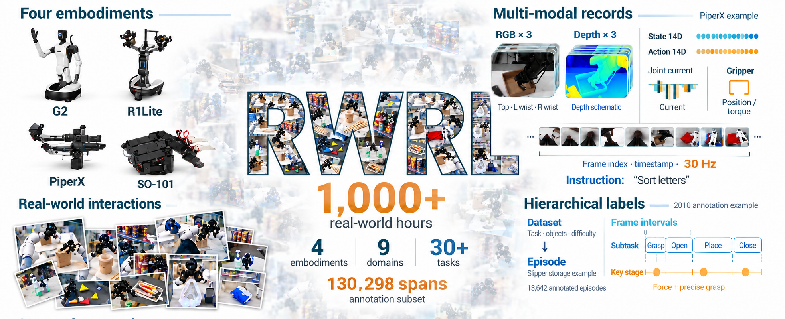
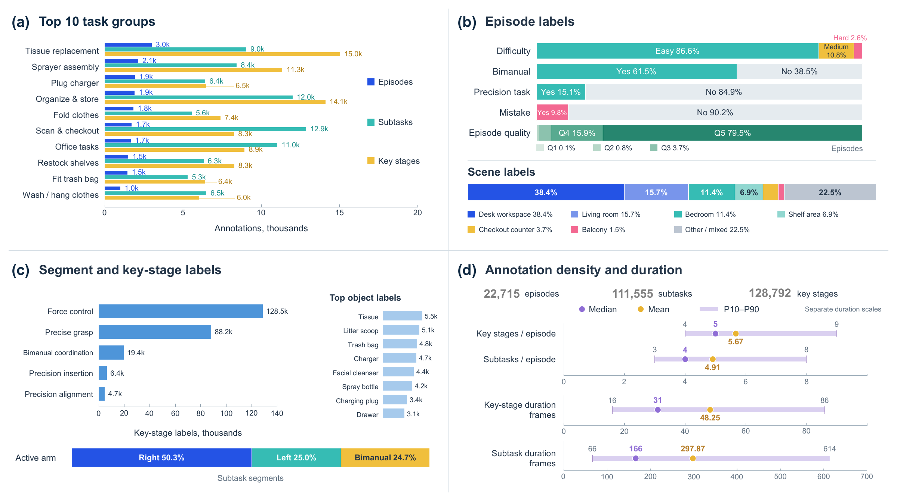
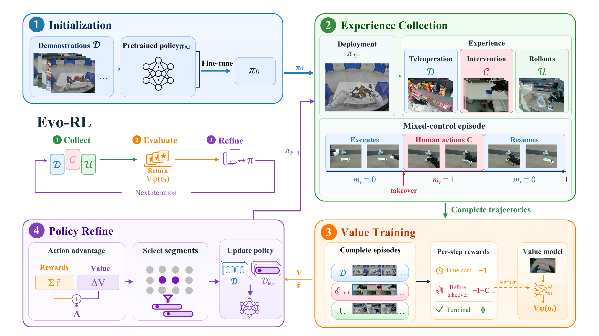
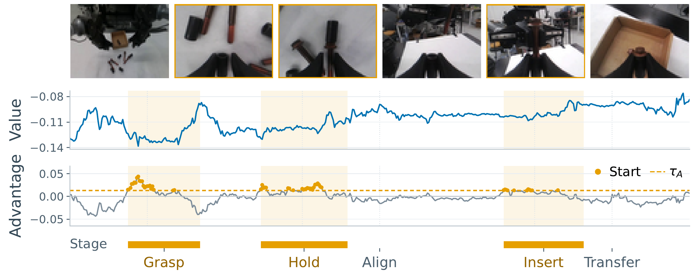
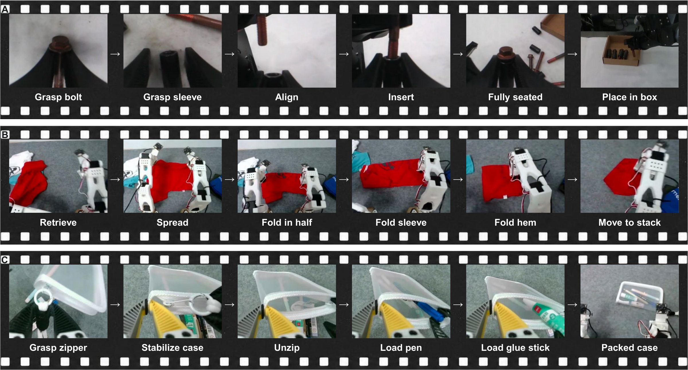
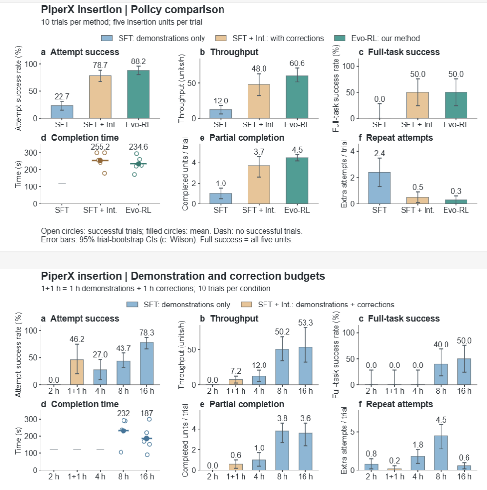

Dataset context
Task, embodiment, difficulty, objects, and coordination or precision requirements.
REAL-WORLD ROBOT LEARNING
Learn from demonstrations. Recover with human guidance.
Improve through autonomous experience.
待补充：论文 / arXiv、代码仓库、数据集和模型权重的正式链接

THE IDEA
Vision-language-action models can perform diverse manipulation tasks, yet reliable real-world execution remains challenging. Evo-RL turns execution feedback into iterative policy improvement: demonstrations establish an initial policy, followed by alternating rounds of intervention-based refinement and advantage-guided fine-tuning.
Human interventions concentrate limited supervision on the policy’s current weaknesses. Advantage estimates identify useful segments from demonstrations and autonomous rollouts, helping retain learned skills while focusing fine-tuning on efficient behavior without repeatedly training on the entire growing dataset. The accumulated experience forms RW-RL: over 1,000 hours of real-world interaction across four robot embodiments, with action-source metadata and semantic annotations.
The current evaluation focuses on precision insertion and deformable manipulation. On PiperX insertion, Evo-RL reaches an attempt success rate of 88.24% and a throughput of 60.61 units/h, compared with 22.73% and 12.00 units/h for demonstration-only fine-tuning. Evo-RL results for garment folding are pending.
内容依据当前论文草稿整理；未完成的实验和发布信息均保留占位。
THE DATA BEHIND THE LOOP
Real-world experience, with the context needed to learn from it. RW-RL unifies teleoperated demonstrations, human-intervention episodes, and autonomous rollouts across different robot platforms.
Dataset scale as described in the current manuscript. Public access links are pending.
Task, embodiment, difficulty, objects, and coordination or precision requirements.
Instructions, scenes, outcomes, execution quality, and mistakes.
Subtasks, key stages, controller identity, intervention boundaries, and policy checkpoints.

数据集下载地址、数据说明 / 数据卡、许可协议及各平台的数据规模明细。
THE LEARNING LOOP
Evo-RL combines demonstration-based learning, targeted human corrections, and selective experience reuse. The loop repeats as the policy improves, with each update continuing from the previous checkpoint.
Fine-tune a pretrained π0.5 VLA policy on teleoperated demonstrations to establish and retain task competence.
Deploy the current policy and collect corrections at its failure points. Mix demonstrations with human-controlled segments from successful intervention episodes.
Train a value model on complete trajectories. Select useful demonstration and available autonomous segments, mix them with human corrections, and fine-tune the policy.

SELECTIVE EXPERIENCE REUSE
A visual value model estimates the remaining cost of execution time and human takeovers. Action-sequence advantages identify promising segment starts; selected windows are merged within each episode for policy fine-tuning.

Algorithm 1 repeats demonstration-based learning, intervention collection and refinement, and advantage-guided fine-tuning. It ranks demonstrations and available autonomous experience separately, then mixes selected subsets with unranked human corrections. Complete episodes support value learning while controller boundaries identify human actions for policy supervision.
The policy takes camera images, robot proprioception, and a task instruction and generates action chunks. A separate, task-specific, vision-only value model predicts normalized returns using 201 bins in [−1, 0] with two-hot supervision. Nonterminal frames cost one unit; the policy transition immediately before a human takeover receives an additional penalty. Terminal cost is zero.
待统一：Algorithm 1 和 Method 按示范 / 自主数据分别取 top 30%；实验部分写正优势的全局 top 10%（50-action 估值、20-action 保留段，并混合原始示范）。两处的采样比例与训练混合方式仍需确认，网页不代填最终设置。
ON REAL ROBOTS
The current quantitative tables focus on PiperX insertion and SO-101 garment folding. Both platforms use two arms, an external RGB camera, and two wrist cameras. RW-RL also includes pencil-case packing, illustrated below as a dataset example.

PIPERX · PRECISION
Grasp, align, and insert five screw–sleeve pairs, with either arm able to perform the insertion.
展示抓取、对齐和插入全过程；标注播放倍速及策略版本。
SO-101 · DEFORMABLE
Retrieve and spread a T-shirt, fold it in half, fold the sleeves, then fold the hem toward the collar.
展示五个评估阶段；如发生人工复位，请明确标注。
SO-101 · DATASET EXAMPLE
Open a pencil case and collect stationery from the tabletop. This sequence illustrates the task coverage of RW-RL.
待补充数据集演示视频，标注策略版本与干预区间；新版论文未提供收纳任务的定量结果表。
EXPERIMENTAL RESULTS
The updated manuscript and accompanying PiperX results figure compare policy refinement and human-data efficiency. Each PiperX condition uses 10 trials with five insertion units per trial. Missing experiments remain marked as pending.
Attempt success
88.2%SFT: 22.7% · SFT + Int.: 78.7%Throughput
60.6 units/hSFT: 12.0 · SFT + Int.: 48.0Completed units per trial
4.5 / 5SFT: 1.0 · SFT + Int.: 3.7Attempt success (SR) is successful attempts divided by all attempts across U₁–U₅ and trials. Throughput (TP) is completed units per hour of robot execution, including timed-out trials. Each trial has a five-minute limit.
Full-task success requires all five insertion units to be completed. Completion time is averaged over successful trials only. Partial completion counts completed units per trial, and repeat attempts counts extra attempts per trial.
Evo-RL reaches 88.2% attempt success and 60.6 units/h, with 0.3 extra attempts per trial. Full-task success is 50.0% for both SFT + Int. and Evo-RL. The budget study separately compares demonstration hours with a 1 h demonstration + 1 h correction condition.

These values follow the precision printed in the results figure. The manuscript tables below retain their original two-decimal values for SR and TP. A dash for completion time means no trial completed all five units.
| Metric | SFT | SFT + Int. | Evo-RL |
|---|---|---|---|
| Attempt success (%) ↑ | 22.7 | 78.7 | 88.2 |
| Throughput (units/h) ↑ | 12.0 | 48.0 | 60.6 |
| Full-task success (%) ↑ | 0.0 | 50.0 | 50.0 |
| Successful-trial time (s) ↓ | — | 255.2 | 234.6 |
| Completed units / trial ↑ | 1.0 | 3.7 | 4.5 |
| Extra attempts / trial ↓ | 2.4 | 0.5 | 0.3 |
| Metric | 2 h SFT | 1+1 h SFT + Int. | 4 h SFT | 8 h SFT | 16 h SFT |
|---|---|---|---|---|---|
| Attempt success (%) ↑ | 0.0 | 46.2 | 27.0 | 43.7 | 78.3 |
| Throughput (units/h) ↑ | 0.0 | 7.2 | 12.0 | 50.2 | 53.3 |
| Full-task success (%) ↑ | 0.0 | 0.0 | 0.0 | 40.0 | 50.0 |
| Successful-trial time (s) ↓ | — | — | — | 232 | 187 |
| Completed units / trial ↑ | 0.0 | 0.6 | 1.0 | 3.8 | 3.6 |
| Extra attempts / trial ↓ | 0.8 | 0.2 | 1.8 | 4.5 | 0.6 |
| Task | Method | SR (%) ↑ | TP (units/h) ↑ |
|---|---|---|---|
| PiperX insertion | SFT | 22.73 | 12.00 |
| SFT + Int. | 78.72 | 47.98 | |
| SFT + RL Pending | — | — | |
| Evo-RL | 88.24 | 60.61 | |
| Evo-RL (R2) Pending | — | — | |
| SO-101 folding | SFT | 55.56 | 75.78 |
| Evo-RL Pending | — | — |
For insertion, U₁–U₅ are the five screw–sleeve pairs (10 trials per method). For folding, they are the five evaluated task stages (20 planned instances per stage).
Each cell reports successful completions / planned instances (attempts). Dashes indicate results not yet reported.
| Task / Method | U₁ | U₂ | U₃ | U₄ | U₅ |
|---|---|---|---|---|---|
| Insertion · SFT | 7/10 (20) | 3/10 (15) | 0/10 (9) | 0/10 (0) | 0/10 (0) |
| Insertion · SFT + Int. | 9/10 (11) | 9/10 (12) | 8/10 (10) | 6/10 (8) | 5/10 (6) |
| Insertion · SFT + RL | — | — | — | — | — |
| Insertion · Evo-RL | 10/10 (10) | 10/10 (10) | 10/10 (12) | 10/10 (11) | 5/10 (8) |
| Insertion · Evo-RL (R2) | — | — | — | — | — |
| Folding · SFT | 20/20 (20) | 17/20 (76) | 16/20 (18) | 16/20 (21) | 16/20 (18) |
| Folding · Evo-RL | — | — | — | — | — |
待补充：PiperX 的 SFT + RL 消融、Evo-RL 第二轮，以及 SO-101 folding 的 Evo-RL 结果（U₁–U₅、SR、TP）。
Budget is total active human-control time across demonstrations and interventions. SFT + Int. allocates one hour of each budget to human-intervention data.
| Human budget | Method | SR (%) ↑ | TP (units/h) ↑ |
|---|---|---|---|
| 2 hours | SFT | 0.00 | 0.00 |
| SFT + Int. | 46.15 | 7.20 | |
| 4 hours | SFT | 27.03 | 12.00 |
| SFT + Int. Pending | — | — | |
| 8 hours | SFT | 43.68 | 50.17 |
| SFT + Int. Pending | — | — | |
| 16 hours | SFT | 78.26 | 53.27 |
SFT uses 2, 4, 8, or 16 hours of demonstrations and trains for 2.5 epochs. The intervention settings use 1, 3, or 7 hours of demonstrations followed by one hour of intervention data, with another 2.5 epochs of fine-tuning on the combined data.
| Budget / Method | U₁ | U₂ | U₃ | U₄ | U₅ |
|---|---|---|---|---|---|
| 2 h · SFT | 0/10 (18) | 0/10 (0) | 0/10 (0) | 0/10 (0) | 0/10 (0) |
| 2 h · SFT + Int. | 5/10 (12) | 1/10 (1) | 0/10 (0) | 0/10 (0) | 0/10 (0) |
| 4 h · SFT | 5/10 (23) | 4/10 (7) | 1/10 (7) | 0/10 (0) | 0/10 (0) |
| 4 h · SFT + Int. | — | — | — | — | — |
| 8 h · SFT | 9/10 (21) | 9/10 (14) | 8/10 (23) | 8/10 (19) | 4/10 (10) |
| 8 h · SFT + Int. | — | — | — | — | — |
| 16 h · SFT | 9/10 (12) | 8/10 (9) | 8/10 (8) | 6/10 (12) | 5/10 (5) |
待补充：4 h 与 8 h 预算下 SFT + Int. 的完整评估数据。
CITE THIS WORK
Citation pending
待补充：正式 BibTeX，包含最终作者列表、年份、论文题目及 arXiv 编号或发表信息。